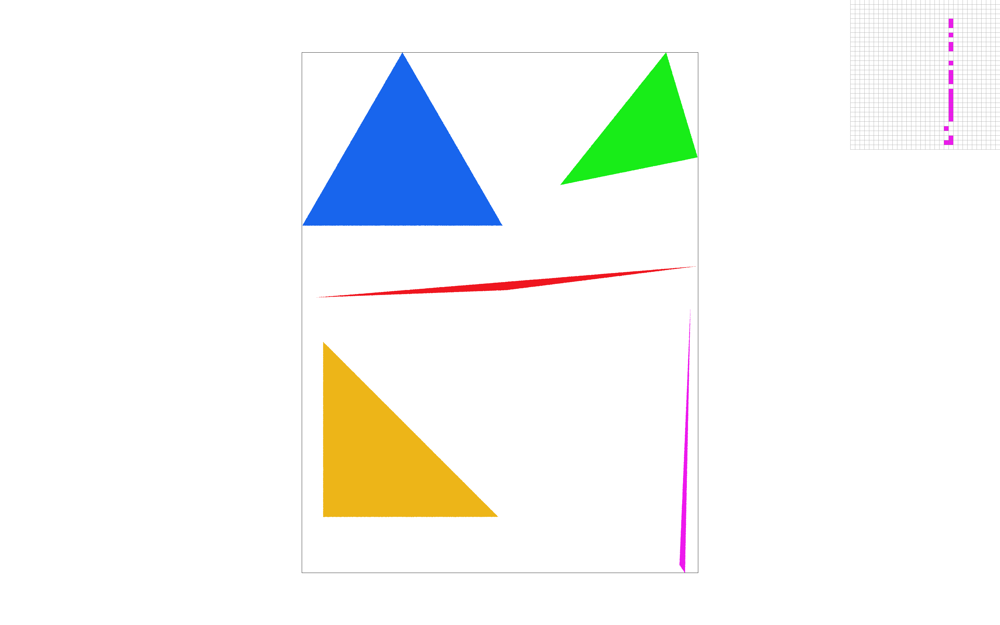
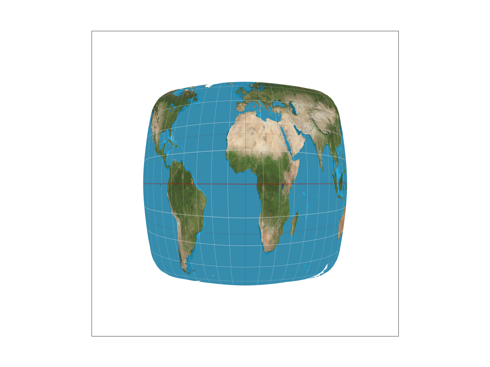
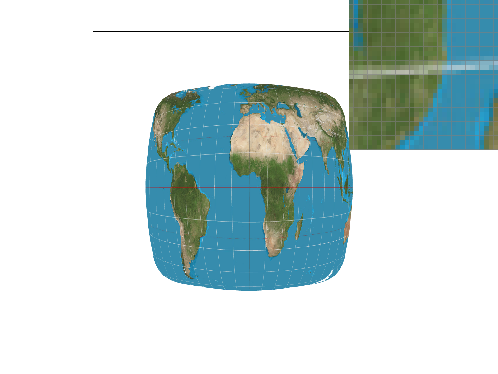

Yash Shah — CS184 Spring 2026
To rasterize a triangle, I first compute its axis-aligned bounding box by taking the minimum and maximum x and y values across the triangle’s three vertices. I then iterate over all pixels within this box and sample at the center of each pixel using (x + 0.5, y + 0.5), as specified in the assignment.
For each sample point, I use edge functions to test whether the point lies inside the triangle. If the
sample is inside the triangle or on its boundary, I fill the pixel with the triangle’s color using
fill_pixel().
My algorithm only checks pixels inside the triangle’s bounding box rather than scanning the entire framebuffer. Each pixel in the bounding box is tested once, so the runtime is proportional to the area of the bounding box. This is no worse than a method that checks every sample in the triangle’s bounding box.
The screenshot below was generated using the GUI S hotkey, with the pixel inspector enabled and centered
on an interesting edge region.

To implement supersampling, I modified the rasterizer to maintain a
separate supersample buffer (sample_buffer) that stores
sample_rate color samples per pixel instead of a single
sample. The buffer size is therefore
width × height × sample_rate.
For triangle rasterization, instead of sampling once at the center
of each pixel, I subdivide each pixel into a
sqrt(sample_rate) × sqrt(sample_rate) grid of evenly spaced
subpixel locations. For each subpixel sample, I perform the same
edge-function point-in-triangle test used in Task 1.
If the sample lies inside or on the boundary of the triangle,
I write the triangle’s color into the corresponding location in
the supersample buffer.
After all primitives are rasterized, I resolve the supersamples
into the final framebuffer inside
resolve_to_framebuffer().
For each pixel, I average the colors of its
sample_rate subpixel samples and write the averaged
result into the RGB framebuffer. This averaging step produces
partial coverage values near edges, which reduces aliasing artifacts.
The runtime of the rasterizer increases approximately linearly
with the sample rate, since each pixel now requires
sample_rate coverage tests instead of one.
However, rasterization is still restricted to the triangle’s
axis-aligned bounding box, so performance remains proportional
to the bounding box area rather than the entire framebuffer.
Supersample Rate = 1
Supersample Rate = 4
Supersample Rate = 16
At a sample rate of 1, triangle edges exhibit visible aliasing (stair-step artifacts), especially along shallow or diagonal edges. This occurs because each pixel is classified as either fully inside or fully outside the triangle.
At a sample rate of 4, edge transitions become smoother because pixels along boundaries may now have partial coverage. The averaged subpixel samples produce intermediate colors that reduce the stair-step effect.
At a sample rate of 16, edges appear significantly smoother, with much finer transitions along triangle boundaries. The improvement is especially noticeable along thin or slanted edges, where higher sampling density better approximates the true geometric coverage of the triangle.
In addition to regular grid supersampling, I implemented jittered sampling. Instead of placing subpixel samples at fixed grid locations, each sample position is randomly perturbed within its subpixel cell using a deterministic hash-based offset. This keeps sampling stable between frames while introducing randomness in sample placement.
Grid supersampling reduces aliasing but may introduce structured patterns along certain edges due to the regular alignment of the grid. Jittered sampling breaks this regularity and distributes error more randomly, which reduces visible structured artifacts.
Grid Sampling (sample rate = 16)

Jittered Sampling (sample rate = 16)

Compared to regular grid sampling, jittered sampling produces less structured stair-step artifacts along diagonal edges. While both methods significantly reduce aliasing compared to sample rate 1, jittered sampling appears visually smoother because the aliasing error is less correlated.
After implementing the translate, scale, and
rotate transformation matrices in transforms.cpp,
the original robot.svg rendered correctly.
To demonstrate hierarchical transformations, I created a modified
version of the robot called my_robot.svg.
I changed the robot’s color and adjusted several group transforms
to create a more dynamic pose. The right arm group was rotated
(using rotate(-40)) to simulate a waving motion.
The left and right leg groups were rotated in opposite directions
(rotate(20) and rotate(-20)) to give the appearance
of running. I also slightly rotated the head to make the pose
feel more expressive.
Because each limb is defined inside a <g> group,
applying a transformation to the group automatically affects
all child polygons within that limb. This demonstrates how
hierarchical transforms propagate through the SVG transformation
stack via matrix multiplication.
Barycentric coordinates represent any point inside a triangle as a weighted combination of the triangle’s three vertices. For a point P inside a triangle with vertices V0, V1, and V2, we compute three weights (α, β, γ) such that:
P = αV0 + βV1 + γV2, and α + β + γ = 1.
Intuitively, each weight measures how close the point is to a vertex. If P is near V0, then α is large; if P lies on the edge opposite V0, then α becomes 0. In our rasterizer, we compute these weights using edge functions (signed area tests). A point is inside the triangle if the weights are all nonnegative (or all nonpositive, depending on winding).
Once we have (α, β, γ), we can smoothly interpolate any per-vertex quantity across the triangle. For this task, we interpolate color: the final color at P is α·C0 + β·C1 + γ·C2. This produces smooth color gradients instead of flat-colored triangles.
Pixel sampling determines how we compute the color of a pixel when mapping a texture onto a triangle. After computing barycentric coordinates for each sub-sample inside a pixel, we interpolate the corresponding texture coordinates (u, v). These (u, v) coordinates lie in the continuous range [0, 1], but the texture itself is stored as a discrete grid of texels. Pixel sampling determines how we convert this continuous texture coordinate into a final color value.
In this task, I implemented two pixel sampling methods:
For Task 5, only level 0 of the mipmap (full resolution texture) was used.
In rasterize_textured_triangle, I reused the supersampling and barycentric interpolation
logic from Task 4. For each sub-sample inside a pixel:
Nearest sampling converts (u, v) into the closest texel index using rounding. Bilinear sampling computes a weighted average of the four surrounding texels using linear interpolation in both the x and y directions.
Nearest neighbor sampling selects the single texel whose center is closest to the continuous (u, v) coordinate. This method is fast and simple but can produce visible blockiness and abrupt color transitions.
Nearest sampling, 1 sample per pixel
Nearest sampling, 16 samples per pixel
With 1 sample per pixel, the texture appears slightly blocky, especially when zoomed in around coastlines and grid lines. Increasing to 16 samples per pixel smooths triangle edges (geometry aliasing), but the texture itself still exhibits blockiness because nearest sampling does not blend between texels.
Bilinear interpolation samples the four surrounding texels and blends them based on the fractional part of the texture coordinate. This produces smoother transitions between texels.
Bilinear sampling, 1 sample per pixel
Bilinear sampling, 16 samples per pixel
Compared to nearest sampling, bilinear interpolation produces smoother coastlines and grid lines. The texture transitions appear softer, and individual texel boundaries are less visible. With 16 samples per pixel, both texture smoothness and geometric edge smoothness improve further.
Using the pixel inspector and zooming into the grid lines on the globe, the difference between the two methods becomes more apparent.
Nearest sampling (zoomed view)
Bilinear sampling (zoomed view)
Nearest sampling produces visible square texel blocks and abrupt color changes. Bilinear sampling blends neighboring texels, producing smoother gradients and less noticeable pixel boundaries.
The difference between nearest and bilinear sampling becomes more significant when:
Nearest sampling preserves sharp texel boundaries, which can result in visible aliasing artifacts. Bilinear sampling reduces these artifacts by interpolating between texels, creating smoother transitions. However, bilinear sampling can slightly blur fine details compared to nearest sampling.
In summary, nearest sampling is faster but produces more aliasing, while bilinear sampling improves visual quality by smoothing texture transitions.
It is important to distinguish between pixel sampling and supersampling. Pixel sampling determines how a texture color is computed from texture coordinates (u, v). Nearest and bilinear sampling affect how smoothly the texture itself appears.
Supersampling, on the other hand, reduces aliasing along triangle edges by taking multiple sub-samples within each pixel and averaging them. Increasing the supersample rate improves geometric edge smoothness but does not change how individual texels are filtered.
Therefore:
These two techniques address different sources of aliasing in the rendering pipeline.
Level sampling decides which resolution of the texture (which mipmap level) to sample from. When a textured surface becomes small on the screen (zooming out), many texels in the original (high-resolution) texture may map into a single screen pixel. If we always sample from level 0, high-frequency details in the texture can cause strong aliasing artifacts such as shimmering, moiré patterns, and noisy edges.
Mipmaps solve this by storing prefiltered versions of the texture at decreasing resolutions. Level sampling chooses the appropriate mip level based on how quickly the texture coordinates (u, v) change across the screen.
To compute the mip level, for each sample point inside the triangle I computed the texture
coordinates at three screen locations: (x, y), (x+1, y), and (x, y+1). These correspond to
sp.p_uv, sp.p_dx_uv, and sp.p_dy_uv. In Texture::get_level,
I computed the difference vectors (p_dx_uv - p_uv) and (p_dy_uv - p_uv), scaled them
by the width/height of the level-0 texture to convert into texel space, and then used the lecture
formula:
D = log2(footprint) as the mip level.
Finally, Texture::sample performs level sampling based on lsm:
After Task 6, we can independently control three techniques: supersampling, pixel sampling, and level sampling. Each has different tradeoffs:
Below are four renders of the same textured scene using my own PNG, showing the combinations requested:

Level 0 with nearest pixel sampling. Aliasing is more visible and texels appear blocky.

Level 0 with bilinear pixel sampling. Transitions are smoother, but aliasing can still occur when zoomed out.

Nearest mip level with nearest pixel sampling. Texture aliasing is reduced compared to L_ZERO.

Nearest mip level with bilinear sampling. This generally produces the best balance of stability and smoothness among the four.
Overall, L_NEAREST significantly reduces texture aliasing when the object is zoomed out, because it samples from a mip level whose resolution better matches the pixel footprint on screen. Bilinear pixel sampling further smooths within that chosen mip level.